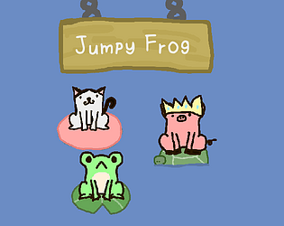
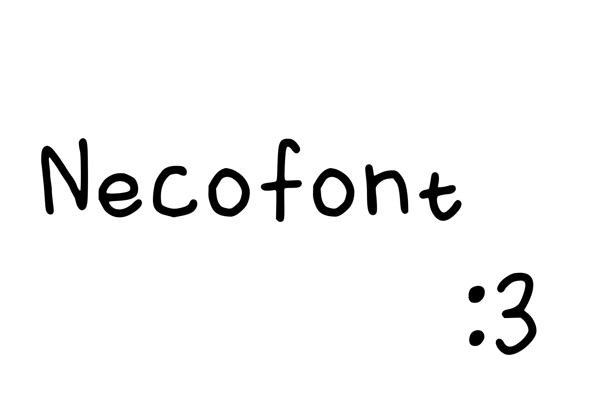
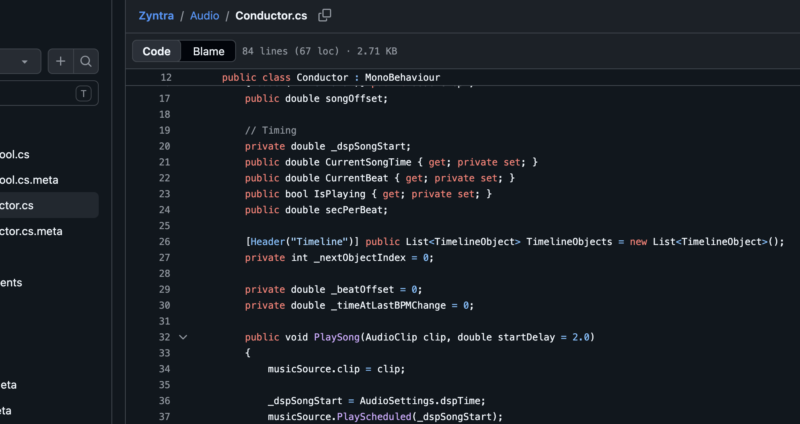

Cumori Neco
🇹🇼｜♂︎｜Born in 2012/9/18
Hello my name is Neco (rhymes with chinko), also known as Cumori or NecoDev elsewhere. I do
programming stuff, mostly related to C# and Unity. However, I need to go to school and I am lazy
so I am not extremely active about these topics, but that doesn't mean I'm not interested!
If you ask when I started this all (which you won't, I know), I first drew a game with a pencil
and play with my friends when I was like 7 or 8. It turned out to be a bit fun so as a failure
asian boy (joke) would do, I decided to learn more. When I was 9, I learned Scratch by myself
(don't look - it is worse than you think) then I learned Unity a year later.
I guess that's basically it, if you wonder how many sh1ts I've made then you can scroll down to
see more.
My Discord Server
If you want to give me a hand on publishing my game Jumpy Frog to the Play Store, please join my Discord server!!!
Join the server →
My Projects

Jumpy Frog
An infinite jumper game I made during the summer of 2025. It went a little bit viral on
Threads in Taiwan on March 2026. Currently the project I'm most proud of.

Necofont
A small handwrite font I made for Jumpy Frog. I made this when I was 11 so don't complain
if the font looks to ugly. Some symbol characters are missing so make sure you have a
fallback font!

Zyntra
A simple rhythm game engine built for Unity that nobody asked for. It handles audio, data and basic logic for you
so you can make your game with less pain. Currently being abandoned. Will I ever revive it?
We'll see.
Desk
Hey why not take a look at my messy desk?
My Desk →